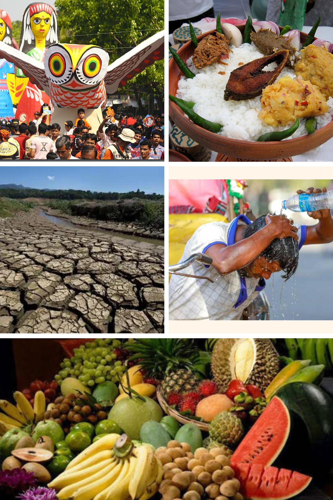

Bangladesh The land of Six Seasons
There are six seasons in Bangladesh.Each season of Bangladesh has its own influence on the People of this country.
We feel new environment and enjoy new scenes in each season.
There is no country in the world has the six seasons so sharply felt as in Bangladesh. Everything changes.
The people also feel different in each season. They forget the boredom of life and start their daily work anew.The Season of Bangladesh regulates it's economy, communication, trade and commerce, art and culture.
- Summer:The Bengali year begins with summer. "Pohela Boishakh" means the 1st day of the 1st month of the bengali year,
is celeberated in all over Bangladesh.

This season tremendous fury arose. In the summer, the rivers are dried up.
This is the season of extreme heat wave in Bangladesh, But fortunately we get to enjoy many delicious fruits.
The color of summer flower pet is so appealing that the eyes can not be turned away.
- Monsoon:
This is the second season in Bengali Calendar.The Sky is overcast with clouds and
it rains heavily all the day. Rain is a great blessing for our country.
Our Agriculture also largely depends on it.
- Autumn:
Blue, Gold and Green are the colours of Autumn! At that time, the white cloud floats in the blue sky,
but still the soil is in the essence of the rainy season.
The Hindu religion followers perform their Durga Puja in this season.
- Late Autumn: In this season the land is prepared best for cultivation. Festivals flourish to hail the harvest such as Nabanna Utshab.
This season is also hints the arrival of Winter!Due to the heavy fall in temperature at the end of the day, from mid-November to mid-afternoon the heat starts to fall and
the dew accumulates on the grass; Fog also can be seen often.
- Winter: Winter season is the favorite season for Bengali.
Any ritual is brilliant in its own nature. People enjoy the festival of making snacks with palm juice.
The ideal time to prepare the snacks in the morning of winter.
Bhapa pitha's name comes in the first in winter. Also many delicious cakes are made in winter mornings.
- Spring: After the winter, spring comes like a king.
Spring is the season of renewal, growth, and new beginnings. It's a time when the world awakens from
its winter slumber, and nature comes alive with color, sound, and energy.
From the first bloom of a flower to the return of migratory birds, spring is a season of beauty and wonder.